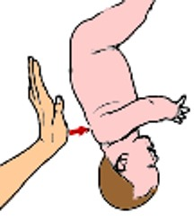
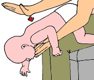
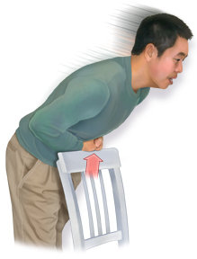

Asfixia mecánica o atragantamiento
Es un accidente respiratorio u obstrucción de las vías respiratorias, provocado por un trozo de alimento, bebida u otro objeto. La persona respira con dificultad y puede asfixiarse por falta de oxígeno.
Todos en algún momento hemos experimentado esta sensación, cuando se atraviesa o atora un alimento u objeto; sin embargo la reacción de la persona consciente es la de toser, tratando de liberarse del objeto o alimento.
Sin embargo, muchas veces la acción de toser no es suficiente para expulsar el alimento u objeto, por lo que es necesario aplicar los primeros auxilios.
Que hacer en caso de una asfixia mecánica o atragantamiento
En niños pequeños
1 Tómalo por los pies, colócalo de cabeza abajo, y usando la base de tu mano, dale cinco golpes firmes entre sus omóplatos o paletillas (los huesos planos de la espalda) para tratar de que expulse el objeto.
2 Los golpes deben ser firmes pero suaves, recuerda que le cuerpo de un bebe es muy frágil.
En niños
1 Colócalo con cuidado boca arriba, apoyado sobre tu antebrazo, y con la misma mano sostén su cabeza y su cuello. Coloca la otra mano y antebrazo encima del niño, de manera que esté en medio de tus antebrazos.
2 Extiende tu mano y usa tus dedos pulgar e índice para sostener la mandíbula. Dale la vuelta al niño y colócalo con cuidado boca abajo, apoyado sobre tu antebrazo. Baja tu brazo y apóyalo sobre tu muslo de modo que la cabeza esté por debajo de su pecho.
3 Entonces, usando la base de tu mano, dale cinco golpes firmes entre sus omóplatos o paletillas (los huesos planos de la espalda) para tratar de que expulse el objeto. Mantén apoyando su cabeza y nuca, lo que podrás lograr si sostienes firmemente su mandíbula entre tus dedos pulgar e índice.
En niños grandes, adolescentes y adultos
1 Tranquiliza a la víctima y explícale que vas a ayudarlo(a). Ten presente que debes llamar el servicio de emergencia médica después que hayas tratado de ayudar a la víctima, ya que cada segundo es fundamental trata de que otros llamen por teléfono al servicio de emergencias mientras tú atiendes a la víctima.
2 Párate detrás de la víctima con las piernas abiertas, para formar una especie de trípode en caso que la víctima se desmaye o pierda la conciencia (esto te ayudará a sostenerla y estabilizar rápidamente su caída).
Abraza a la víctima desde atrás, formado un círculo alrededor del abdomen (estómago).
Haz un puño con tu mano más fuerte. El pulgar del puño debe apuntar hacia el puño. Coloca el puño justo encima del ombligo de la víctima, debajo del esternón.
Envuelve tu otra mano firmemente alrededor del puño. Asegúrate de mantener tu pulgar alejado del cuerpo de la víctima, para evitar dañarla.
3 Realiza la maniobra de Heimlich, también conocida como compresión abdominal:
- Tira con las manos hacia adentro y arriba, apretando el abdomen de la víctima, con rápidos movimientos ascendentes, empleando bastante fuerza. El movimiento debe ser similar a la letra J – hacia adentro y luego hacia arriba.
- Los movimientos deben ser rápidos y fuertes, como si estuvieras tratando de levantar a la víctima sobre sus pies.
- Haz 5 compresiones abdominales en rápida sucesión. Repite la serie de compresiones hasta que el objeto sea liberado y expulsado. Si la maniobra es exitosa la víctima toserá expulsando el objeto que obstruye sus vías respiratorias.
- Utiliza menos fuerza si la víctima es un niño.
- Si la víctima se desmaya, suspende inmediatamente las compresiones. Ten en cuenta que esto puede ocurrir en cualquier momento si el objeto no es liberado.
4 Controla para ver si ha recuperado la respiración normal. Una vez que el objeto es expulsado, la mayoría de las personas vuelven a respirar normalmente. Si la respiración no se normaliza, continúa las compresiones.
5 Si no puedes desatascar la obstrucción trata de obtener ayuda inmediatamente. Si la víctima está inconsciente, debes cesar inmediatamente las compresiones.
Consejos
- Si se trata de una mujer embarazada o una persona obesa, modifica la maniobra de Heimlich de la siguiente manera:
- Coloca tus manos más arriba de cómo se describió antes. La posición correcta es con las manos en el esternón, justo donde se unen las últimas costillas.
- Presiona fuerte en el pecho con compresiones rápidas como se describió antes. Sin embargo, no podrás empujar hacia arriba.
- Si la víctima puede toser, anímala para que lo haga antes de intentar la maniobra de Heimlich. Si la víctima puede toser, no uses esta técnica, pues se trata de una obstrucción parcial, y debes inducir a la persona a que tosa para expulsar el objeto por sí misma. Frecuentemente una tos fuerte puede expulsar el objeto.
- Ten cuidado con la caída de la víctima. Si está verdaderamente ahogada, en algún momento perderá el conocimiento y se caerá. Si esto ocurre, ayúdala a ubicarse en el suelo y sigue con las compresiones.
Importante: Una vez eliminada la obstrucción, es importante verificar que la persona esté respirando normalmente, de lo contrario será necesario practicar la respiración artificial, colocar a la víctima en posición de recuperación y pedir ayuda médica inmediata.

Maniobra de Heimlich en ti mismo
Si te estás ahogando con algo, puedes realizar la maniobra de Heimlich en ti mismo. Sige estos pasos:
- Empuña la mano y coloca el pulgar por encima del ombligo.
- Sujeta el puño con la otra mano y presiona en la zona con un movimiento rápido hacia arriba
También te puedes apoyar sobre el borde de una mesa, silla o baranda y empujar rápidamente la parte superior del vientre (abdomen superior) contra el borde.
Si es necesario, debes repetir este movimiento hasta que el objeto que obstruye las vías respiratorias salga.